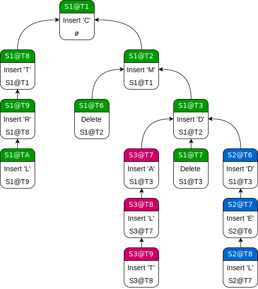
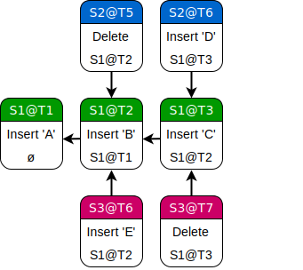
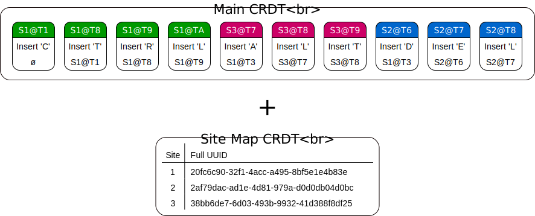
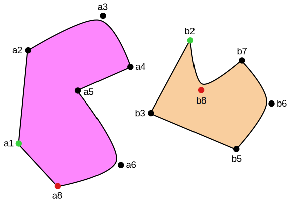

Data Laced with History: Causal Trees & Operational CRDTs
Mar 24, 2018 programming
(Sorry about the length! At some point in the distant past, this was supposed to be a short blog post. If you like, you can skip straight to the demo section to get a sense of what this article is about.)
Embarrassingly, most of my app development to date has been confined to local devices. Programmers like to gloat about the stupendous mental castles they build of their circuitous, multi-level architectures, but not me. In truth, networks leave me quite perplexed. I start thinking about data serializing to bits, servers performing their arcane handshakes and voting rituals, merge conflicts pushing into app-space and starting the whole process over again—and it all just turns to mush in my head. For peace of mind, my code needs to be locally provable, and this means things like idempotent functions, decoupled modules, contiguous data structures, immutable objects. Networks, unfortunately, throw a giant wrench in the works.
Sometime last year, after realizing that most of my document-based apps would probably need to support sync and collaboration in the future, I decided to finally take a stab at the problem. Granted, there were tons of frameworks that promised to do the hard work of data model replication for me, but I didn’t want to black-box the most important part of my code. My gut told me that there had to be some arcane bit of foundational knowledge that would allow me to sync my documents in a refined and functional way, decoupled from the stateful spaghetti of the underlying network layer. Instead of downloading a Github framework and smacking the build button, I wanted to develop a base set of skills that would allow me to easily network any document-based app in the future, even if I was starting from scratch.
The first order of business was to devise a wishlist for my fantastical system:
- Most obviously, users should be able to edit their documents immediately, without even touching the network. (In other words, the system should only require optimistic concurrency.)
- Sync should happen in the background, entirely separate from the main application code, and any remote changes should be seamlessly integrated in real-time. (The user shouldn’t have to notice that the network is down.)
- Merge should always be automatic, even for concurrent edits. The user should never be faced with a “pick the correct revision” dialog box.
- A user should be able to work on their document offline for an indefinite period of time without accruing “sync debt”. (Meaning that if, for example, sync is accomplished by sending out mutation events, performance should not suffer even if the user spends a month offline and then sends all their hundreds of changes at once.)
- Secondary data structures and state should be minimized. Most of the extra information required for sync should be stored in the same place as the document, and moving the document to a new device should not break sync. (No out-of-band metadata or caches!)
- Network back-and-forth should be condensed to a bare minimum, and rollbacks and re-syncs should practically never happen. To the greatest possible degree, network communication should be stateless and dumb.
- To top it all off, my chosen technique had to pass the “PhD Test”. That is to say, one shouldn’t need a PhD to understand and implement the chosen approach for custom data models!
After mulling over my bullet points, it occurred to me that the network problems I was dealing with—background cloud sync, editing across multiple devices, real-time collaboration, offline support, and reconciliation of distant or conflicting revisions—were all pointing to the same question: was it possible to design a system where any two revisions of the same document could be merged deterministically and sensibly without requiring user intervention? Sync, per se, wasn’t the issue, since getting data from one device to another was essentially a solved problem. It’s what happened after sync that was troubling. On encountering a merge conflict, you’d be thrown into a busy conversation between the network, model, persistence, and UI layers just to get back into a consistent state. The data couldn’t be left alone to live its peaceful, functional life: every concurrent edit immediately became a cross-architectural matter. On the other hand, if two documents could always be made to merge, then most of that coordination hullabaloo could go out the window. Each part of the system could be made to work at its own pace.
Whether stored as a record in a database or as a stand-alone file, a document could be interpreted as a collection of basic data fields: registers, sequences, dictionaries, and so forth. Looking at the problem from a database perspective, it was actually quite simple to automatically resolve merge conflicts in this kind of table row: just keep overwriting each field with the version sporting the highest timestamp, logical or otherwise. (Ignoring issues of inter-field consistency for now.) Of course, for anything other than basic registers, this was a terrible approach. Sequences and dictionaries weren’t just blobs of homogeneous data that were overwritten with every change, but complex, mutable structures that users were editing on a granular level. For such a fundamental problem, there was a surprising dearth of solutions out in the real world: most systems punted the task to app-space by asking the client to manually fix any merge conflicts or pick the correct version of a file. It seemed that if the problem of automatic merge for non-trivial data types could be solved—perhaps by exposing their local, type-specific mutation vocabulary to the storage and replication layers?—then a solution to the higher-level problem of automatic document merge would fall within reach.
In hope of uncovering some prior art, I started by looking at the proven leader in the field, Google Docs. Venturing down the deep rabbit hole of real-time collaborative editing techniques, I discovered that many of the problems I faced fell under the umbrella of strong eventual consistency. Unlike the more conventional strong consistency model, where all clients receive changes in identical order and rely on locking to some degree, strong eventual consistency allows clients to individually diverge and then arrive at a final, consistent result once each update has been received. (Or, in a word, when the network is quiescent.)
There were a number of tantalizing techniques to investigate, and I kept several questions in mind while doing my analysis. Could a given technique be generalized to arbitrary and novel data types? Did the technique pass the PhD Test? And was it possible to use the technique in an architecture with smart clients and dumb servers?
The reason for that last question was CloudKit Sharing, a framework introduced in iOS 10. For the most part, this framework functioned as a superset of regular CloudKit, requiring only minor code changes to enable document sharing in an app. A developer didn’t even have to worry about connecting users or dealing with UI: Apple did most of the hard work in the background while leveraging standard system dialogs. But almost two years later, on the order of no one seemed to be using it. Why was this? Most other Apple APIs tended to be readily adopted, especially when they allowed the developer to expand into system areas which were normally out of bounds.
My hunch was that CloudKit Sharing forced the issue of real-time collaboration over a relatively dumb channel, which was a task outside the purview of conventional sync approaches. CloudKit allowed developers to easily store, retrieve, and listen for new data, but not much else besides. No third-party code was allowed to run on Apple’s servers, so merge conflicts had to be handled locally. But unlike in the single-user case, which presented limited opportunities for concurrent edits, you couldn’t just pop up a merge dialog every time another participant in your share made a change to your open document. The only remaining options seemed to be some sort of ugly, heuristic auto-merge or data-dropping last-write-wins, neither of which was acceptable for real-time use. Collaboration along the lines of Google Docs appeared to be impossible using this system! But was it really?
I realized that this was my prize to be won. If I could figure out a way to develop auto-merging documents, I’d be able to implement sync and collaboration in my apps over CloudKit while using Apple’s first-party sharing UI—all without having to pay for or manage my own servers. So this became my ultimate research goal: a collaborative iPhone text editing demo that synced entirely over CloudKit. (And here’s a spoiler: it worked!)
Convergence Techniques: A High-Level Overview
There are a few basic terms critical to understanding eventual consistency. A network is comprised of sites (“devices”, “peers”) operating in parallel, each one producing operations (“events”, “actions”) that mutate the data and exchange information with other sites. The first vital concept here is causality. An operation is caused by another operation when it directly modifies or otherwise involves the results of that operation, and determining causality is critical to reconstructing a sensible timeline (or linearization) of operations across the network. (An operation that causes another operation must always be ordered first.) However, we can’t always determine direct causality in a general way, so algorithms often assume that an operation is causally ahead of another one if the site generating the newer operation has already seen the older one at the time of its creation. (In other words, every operation already seen by a site at the time a new operation is created is in that operation’s causal past.) This “soft” causality can be determined using a variety of schemes. The simplest is a Lamport timestamp, which requires that every new operation have a higher timestamp than every other known operation, including any remote operations previously received. Although there are eventual consistency schemes that can receive operations in any order, most algorithms rely on operations arriving at each site in their causal order (e.g. insert A necessarily arriving before delete A). When discussing convergence schemes, we can often assume causal order since it can be implemented fairly mechanically on the transport layer. If two operations don’t have a causal relationship—if they were created simultaneously on different sites without knowledge of each other—they are said to be concurrent. Most of the hard work in eventual consistency involves dealing with these concurrent operations. Generally speaking, concurrent operations have to be made to commute, or have the same effect on the data regardless of their order of arrival. This can be done in a variety of ways
Given their crucial role in event ordering, different schemes for keeping time are worth expanding on a bit. First, there’s standard wall clock time. Although this is the only timestamp that can record the exact moment at which an event occurred, it also requires coordination between sites to correct clock drift and deal with devices whose clocks are significantly off. (Otherwise, causality violations may occur.) The server in a typical client-server architecture can serve as the authoritative clock source, but this sort of easy solution isn’t available in a true distributed system. Instead, the common approach is to use a logical timestamp, which takes logical timestamps from previous events as input and doesn’t require any coordination or synchronization to work. Lamport timestamps, mentioned above, are the simplest kind of logical timestamp, but only provide a rough sense of event causality. In order to know for certain whether two events are concurrent or sequential, or to tell which events might be missing from causal order, a more advanced timestamp such as a version vector needs to be used. Version vectors (or their close relatives, vector clocks) give us very precise information about the order and causality of events in a distributed system, but come with potentially untenable space complexity, since each timestamp has to include a value for every previously-seen site in the network. You can read in detail about the different kinds of logical clocks in this handy ACM Queue article.
Finally, there’s the notion of an event log. Usually, operations in a distributed system are executed and discarded on receipt. However, we can also store the operations as data and play them back when needed to reconstruct the model object. (This pattern goes by the name of event sourcing in enterprise circles.) An event log in causal order can be described as having a partial order, since concurrent operations may appear in different positions on different sites depending on their order of arrival. If the log is guaranteed to be identical on all devices, it has a total order. Usually, this can be achieved by sorting operations first by their timestamp, then by some unique origin ID. (Version vectors work best for the timestamp part since they can segregate concurrent events by site instead of simply interleaving them.) Event logs in total order are especially great for convergence: when receiving a concurrent operation from a remote site, you can simply sort it into the correct spot in the event log, then play the whole log back to rebuild the model object with the added influence from the new operation. But it’s not a catch-all solution, since you can run into a O(n2) complexity wall depending on how your events are defined.
Now, there are two competing approaches in strong eventual consistency state-of-the-art, both tagged with rather unappetizing initialisms: Operational Transformation (OT) and Conflict-Free Replicated Data Types (CRDTs). Fundamentally, these approaches tackle the same problem: given an object that has been mutated by an arbitrary number of connected devices, how do we coalesce and apply their changes in a consistent way, even when those changes might be concurrent or arrive out of order? And, moreover, what do we do if a user goes offline for a long time, or if the network is unstable, or even if we’re in a peer-to-peer environment with no single source of truth?
Operational Transformation
Operational Transformation is the proven leader in the field, notably used by Google Docs and (now Apache) Wave as well as Etherpad and ShareJS. Unfortunately, it is only “proven” insofar as you have a company with billions of dollars and hundreds of PhDs at hand, as the problem is hard. With OT, each user has their own copy of the data, and each atomic mutation is called an operation. (For example, insert A at index 2 or delete index 3.) Whenever a user mutates their data, they send their new operation to all their peers, often in practice through a central server. OT generally makes the assumption that the data is a black box and that incoming operations will be applied directly on top without the possibility of a rebase. Consequently, the only way to ensure that concurrent operations commute in their effect is to transform them depending on their order.
Let’s say Peer A inserts a character in a string at position 3, while Peer B simultaneously deletes a character at position 2. If Peer C, who has the original state of the string, receives A’s edit before B’s, everything is peachy keen. However, if B’s edit arrives first, A’s insertion will be in the wrong spot. A’s insertion position will therefore have to be transformed by subtracting the length of B’s edit. This is fine for the simple case of two switched edits, but it gets a whole lot more complicated when you start dealing with more than a single pair of concurrent changes. (An algorithm that deals with this case—and thus, provably, with any conceivable case—is said to be have the “CP2/TP2” property rather than the pairwise “CP1/TP1” property. Yikes, where’s the naming committee when you need it?) In fact, the majority of published algorithms for string OT actually have subtle bugs in certain edge cases (such as the so-called “dOPT puzzle”), meaning that they aren’t strictly convergent without occasional futzing and re-syncing by way of a central server. And while the idea that you can treat your model objects strictly in terms of operations is elegant in its premise, the fact that adding a new operation to the schema requires figuring out its interactions with every existing operation is nearly impossible to grapple with.
Conflict-Free Replicated Data Types
Conflict-Free Replicated Data Types are the new hotness in the field. In contrast to OT, the CRDT approach considers sync in terms of the underlying data structure, not the sequence of operations. A CRDT, at a high level, is a type of object that can be merged with any objects of the same type, in arbitrary order, to produce an identical union object. CRDT merge must be associative, commutative, and idempotent, and the resulting CRDT for each mutation or merge must be “greater” than than all its inputs. (Mathematically, this flow is said to form a monotonic semilattice. For more info and some diagrams, take a look at John Mumm’s excellent primer.) As long as each connected peer eventually receives the updates of every other peer, the results will provably converge—even if one peer happens to be a month behind. This might sound like a tall order, but you’re already aware of several simple CRDTs. For example, no matter how you permute the merge order of any number of insert-only sets, you’ll still end up with the same union set in the end. Really, the concept is quite intuitive!
Of course, simple sets aren’t enough to represent arbitrary data, and much of CRDT research is dedicated to finding new and improved ways of implementing sequence CRDTs, often under the guise of string editing. Algorithms vary, but this is generally accomplished by giving each individual letter its own unique identifier, then giving each letter a reference to its intended neighbor instead of dealing with indices. On deletion, letters are usually replaced with tombstones (placeholders), allowing two sites to concurrently reference and delete a character at the same time without any merge conflicts. This does tend to mean that sequence CRDTs perpetually grow in proportion to the number of deleted items, though there are various ways of dealing with this accumulated garbage.
One last thing to note is that there are actually two kinds of CRDTs: CmRDTs and CvRDTs. (Seriously, there’s got to be a better way to name these things…) CmRDTs, or operation-based CRDTs, only require peers to exchange mutation events
Differential Synchronization
There’s actually one more technique that’s worth discussing, and it’s a bit of an outlier. This is Neil Fraser’s Differential Synchronization. Used in an earlier version of Google Docs before their flavor of OT was implemented, Differential Sync uses contextual diffing between local revisions of documents to generate streams of frequent, tiny edits between peers. If there’s a conflict, the receiving peer uses fuzzy patching to apply the incoming changes as best as possible, then contextually diffs the resulting document with a reproduced copy of the sender’s document (using a cached “shadow copy” of the last seen version) and sends the new changes back. This establishes a sort of incremental sync loop. Eventually, all peers converge on a final, stable document state. Unlike with OT and CRDTs, the end result is not mathematically defined, but instead relies on the organic behavior of the fuzzy patching algorithm when faced with diffs of varying contexts and sizes.
Finding the Best Approach
Going into this problem, my first urge was to adopt Differential Sync. One might complain that this algorithm has too many subjective bits for production use, but that’s exactly what appealed to me about it. Merge is a complicated process that often relies on heuristics entirely separate from the data format. A human would merge two list text files and two prose text files very differently, even though they might both be represented as text. With Differential Sync, all this complex logic is encapsulated in the diff and patch functions. Like git, the system is content-centric in the sense that the patches work directly with the output data and don’t have any hooks into the data structure or code. The implementation of the data format could be refactored as needed, and the diff and patch functions could be tweaked and improved over time, and neither system would have to know about changes to the other. It also meant that the documents in their original form could be preserved in their entirety server-side, synergizing nicely with Dropbox-style cloud backup. It felt like the perfect dividing line of abstraction.
But studying Differential Sync further, I realized that a number of details made it a non-starter. First, though the approach seems simple on the surface, its true complexity is concealed by the implementation of diff and patch. This class of functions works well for strings, but you basically need to be a seasoned algorithms expert to design a set for a new data type. (Worse: the inherent fuzziness depends on non-objective metrics, so you’d only be able to figure out the effectiveness of your algorithms after prolonged use and testing instead of formal analysis.) Second, diff and patch as they currently exist are really meant for loosely-structured data such as strings and images. Barring conversion to text-based intermediary formats, tightly structured objects would be very difficult to diff and patch while maintaining consistency. Next, there are some issues with using Differential Sync in an offline-first environment. Clients have to store their entire diff history while offline, and then, on reconnection, send the whole batch to their peers for a very expensive merge. Assuming that other sites had been editing away in the meantime, distantly-divergent versions would very likely fail to merge on account of out-of-date context info and lose much of the data for the reconnected peer. Finally, Differential Sync only allows one packet at a time to be in flight between two peers. If there are network issues, the whole thing grinds to a halt.
Begrudgingly, I had to abandon the elegance of Differential Sync and decide between the two deterministic approaches. CRDTs raised some troubling concerns, including the impact of per-letter metadata and the necessity of tombstones in most sequence CRDTs. You could end up with a file that looked tiny (or even empty) but was in fact enormous under the hood. However, OT was a no-go right from the start. One, the event-based system would have been untenable to build on top of a simple database like CloudKit. You really needed active servers or peer-to-peer connections for that. And two, I discovered that the few known sequence OT algorithms guaranteed to converge in all cases—the ones with the coveted CP2/TP2 property—ended up relying on tombstones anyway! (If you’re interested, Raph Levien touches on this curious overlap in this article.) So it didn’t really matter which choice I made. If I wanted the resiliency of a provably convergent system, I had to deal with metadata-laden structures that left some trace of their deleted elements.
And with their focus on data over process, CRDTs pointed to a paradigm shift in the network’s role for document collaboration. By turning each document field into a CvRDT and preserving that representation when persisting to storage or sending across the network, you’d find yourself with a voraciously-mergeable document format that completely disentangled the network layer from the sync machinery. You’d be able to throw different revisions of the same document together in any order to obtain the same merge result, never once having to ask anything of the user. Everything would work without quirks in offline mode irrespective of how much time had passed. Data would only need to flow one way, streamed promiscuously to any devices listening for changes. The document would be topology-agnostic to such a degree that you could use it in a peer-to-peer environment, send it between phone and laptop via Bluetooth, share it with multiple local applications, and sync it through a traditional centralized database. All at the same time!
We tend to think of distributed systems as messy, stateful things. This is because most concurrent events acting on the same data require coordination to produce consistent results. By the laws of physics, remote machines are incapable of sending and receiving their changes as soon as they happen, forcing them to participate in busy conversations with their peers to establish a sensible local take on the global data. But a CRDT is always able to merge with its revisions, past or future. This means that all the computation can be pushed to the edges of the network, transforming the tangle of devices, protocols, and connections at the center of it all into a dumb, hot-swappable “transport cloud”. As long as a document finds its way from device A to device B, sync will succeed. In this world, data has primacy and everything else has to orbit around it!
I admit that this revelation made some wily political thoughts cross my mind. Could this be the chance to finally break free from the shackles of cloud computing? It always felt like such an affront that our data had to snake through a tangle of corporate servers in order to reach the devices right next to us. We used to happily share files across applications and even operating systems, and now everything was funneled through these monolithic black boxes. What happened? How did we let computing become so darn undemocratic? It had gotten so bad that we actually expected our content and workflows to regularly vanish as companies folded or got themselves acquired! Our digital assets—some our most valuable property—were entirely under management of outside, disinterested parties.
CRDTs offered our documents the opportunity to manage their own sync and collaboration, wrestling control over data from centralized systems back to its rightful owners. The road here was fresh and unpaved, however, and I had to figure out if I could use these structures in a performant and space-efficient way for non-trivial applications.
The next step was to read through the academic literature on CRDTs. There was a group of usual suspects for the hard case of sequence (text) CRDTs: WOOT, Treedoc, Logoot/LSEQ, and RGA. WOOT is the progenitor of the genre and gives each character in a string a reference its adjacent neighbors on both sides. Recent analysis has shown it to be inefficient compared to newer approaches. Treedoc has a similar early adopter performance penalty. Logoot (which is optimized further by LSEQ) curiously avoids tombstones by treating each element as a unique point along a dense (infinitely-divisible) number line, adopting bignum-like identifiers with unbounded growth for ordering. Unfortunately, it has a problem with interleaved text on concurrent edits. RGA makes each character implicitly reference its leftmost neighbor and uses a hash table to make character lookups efficient. It also features an update operation alongside the usual insert and delete. The paper is annoyingly dense with theory, but the approach often comes out ahead in benchmark comparisons. I also found a couple of recent, non-academic CRDT designs such as Y.js and xi, all of which brought something new to the table but felt rather convoluted in comparison to the good-enough RGA. In almost all cases, conflicts between concurrent changes were resolved by way of a unique origin ID plus a logical timestamp per character. Sometimes, they were discarded when an operation was applied; other times, they persisted even after merge.
Reading through the literature was highly educational, and I now had a good intuition about the behavior of sequence CRDTs. But I just couldn’t find very much in common between the disparate approaches. Each one brought its own operations, proofs, optimizations, conflict resolution methods, and garbage collection schemes to the table. Many of the papers blurred the line between theory and implementation, making it even harder to suss out any underlying principles. I felt confident using these algorithms for convergent arrays, but I wasn’t quite sure how to build my own replicated data structures using the same principles.
Finally, I discovered the one key CRDT that made things click for me.
Causal Trees
A state-based CvRDT, on a high level, can be viewed as a data blob along with a commutative, associative, and idempotent merge function that can always generate a monotonically further-ahead blob from any two. An operation-based CmRDT, meanwhile, can be viewed as a data blob that is mutated and pushed monotonically forward by a stream of commutative-in-effect (and maybe causally-ordered and deduplicated) events. If the CvRDT data blob was simply defined as an ordered collection of operations, could these two techniques be combined? We’d then have the best of both worlds: an eminently-mergeable data structure, together with the ability to define our data model in terms of domain-specific actions!
Let’s build a sequence CvRDT with this in mind. To have some data to work with, here’s an example of a concurrent string mutation.
Site 1 types “CMD”, sends its changes to Site 2 and Site 3, then resumes its editing. Site 2 and 3 then make their own changes and send them back to Site 1 for the final merge. The result, “CTRLALTDEL”, is the most intuitive merge we could expect: insertions and deletions all persist, runs of characters don’t split up, and most recent changes come first.
First idea: just take the standard set of array operations (insert A at index 0, delete index 3, etc.), turn each operation into an immutable struct, stick the structs into a new array in their creation order, and read them back to reconstruct the original array as needed. (In other words, an instance of the event sourcing pattern with the CvRDT serving as the event log.) This won’t be convergent by default since the operations don’t have an inherent total order, but it’s easy to fix this by giving each one a globally-unique ID in the form of an owner UUID
Success: it’s an operation-based, fully-convergent CvRDT! Well, sort of. There are two major issues here. First, the process of reconstructing the original array from the operational array has O(n2) complexity
OK, so the first step is to fix the intent problem. To do that, we have to strip our operations of any implicit context and define them in absolute terms. Fundamentally, insert A at index 0 isn’t really what the user wants to do. People don’t think in terms of indices. They want to insert a character at the cursor position, which is perceived as being between two letters—or more simply, to the immediate right of a single letter. We can encode this by switching our operations to the format insert Aid after Bid, where each letter in the array is uniquely identified. Given causal order, and assuming that deleted characters persist until any operations that reference them are processed, the intent of these operations is now commutative: there will only ever be that one specific ‘B’ in the array, allowing us to always position ‘A’ just as the user intended.
So how do we identify a particular letter? Just ‘A’ and ‘B’ are ambiguous, after all. We could generate a new ID for each inserted letter, but this isn’t necessary: we already have unique timestamp+UUID identifiers for all our operations. Why not just use the operation identifiers as proxies for their output? In other words, an insert A operation could stand for that particular letter ‘A’ when referenced by other operations. Now, no extra data is required, and everything is still defined in terms of our original atomic and immutable operations.
This is significantly better than before! We now get “CTRLALTDEL” after processing this operational array, correctly-ordered and even preserving character runs as desired. But performance is still an issue. As it stands, the output array would still take O(n2) to reconstruct. The main roadblock is that array insertions and deletions tend to be O(n) operations, and we need to replay our entire O(n) history whenever remote changes come in or when we’re recreating the output array from scratch. Array push and pop, on the other hand, are only O(1) amortized. What if instead of sorting our entire operational array by timestamp+UUID, we positioned operations in the order of their output? This could be done by placing each operation to the right of its causal operation (parent), then sorting it in reverse timestamp+UUID order among the remaining operations
With this new order, local operations require a bit of extra processing when they get inserted into the operational array. Instead of simply appending to the back, they have to first locate their parent, then find their spot among the remaining operations—O(n) instead of O(1). In return, producing the output array is now only O(n), since we can read the operations in order and (mostly) push/pop elements in the output array as we go along
NSMutableString subclass (with some performance caveats). The operations are no longer just instructions: they have become the data!
(Observe that throughout this process, we have not added any extra data to our operation structs. We have simply arranged them in a more precise causal order than the default timestamp+UUID sort allows, which is possible based on our knowledge of the unique causal characteristics of the data model. For example, no matter how high a timestamp an insert operation might have, we know that the final position of its output in the string is solely determined by its parent together with any concurrent runs of inserts that have a higher timestamp+UUID. Every other operation in timestamp+UUID order between that operation and its parent is irrelevant, even if the Lamport timestamps might conservatively imply otherwise. In other words: the Lamport timestamp serves as a sort of brute force upper bound on causality, but we can arrange the operations much more accurately using domain knowledge.)
Pulled out of its containing array, we can see that what we’ve designed is, in fact, an operational tree—one which happens to be implicitly stored as a depth-first, in-order traversal in contiguous memory. Concurrent edits are sibling branches. Subtrees are runs of characters. By the nature of reverse timestamp+UUID sort, sibling subtrees are sorted in the order of their head operations.

This is the underlying premise of the Causal Tree.
In contrast to all the other CRDTs I’d been looking into, the design presented in Victor Grishchenko’s brilliant paper was simultaneously clean, performant, and consequential. Instead of dense layers of theory and labyrinthine data structures, everything was centered around the idea of atomic, immutable, metadata-tagged, and causally-linked operations, stored in low-level data structures and directly usable as the data they represented. From these attributes, entire classes of features followed.
(The rest of the paper will be describing my own CT implementation in Swift, incorporating most of the concepts in the original paper but sporting tweaks based on further research.)
In CT parlance, the operation structs that make up the tree are called atoms. Each atom has a unique identifier comprised of a site UUID, index, and Lamport timestamp
In Swift code, an atom might look something like this:
struct Id: Codable, Hashable
{
let site: UInt16
let index: UInt32
let timestamp: UInt32
}
struct Atom<T: Codable>: Codable
{
let id: Id
let cause: Id
let value: T
}
While a string value might look like this:
enum StringValue: Codable
{
case null
case insert(char: UInt16)
case delete
// insert Codable boilerplate here
}
typealias StringAtom = Atom<StringValue>
What’s great about this representation is that Swift automatically compresses enums with associated values to their smallest possible byte size, i.e. the size of the largest associated value plus a byte for the case, or even less if Swift can determine that a value type has some extra bits available. Here, the size would be 3 bytes. (In case you’re wondering about the 16-bit “UUID” for the site, I’ve devised a mapping scheme from 16-bit IDs to full 128-bit UUIDs that I’ll explain in a later section.)
For convenience, a CT begins with a “zero” root atom, and the ancestry of each subsequent atom can ultimately be traced back to it. The depth-first, in-order traversal of our operational tree is called a weave, equivalent to the operational array discussed earlier. Instead of representing the tree as an inefficient tangle of pointers, we store it in memory as this weave array. Additionally, since we know the creation order of each atom on every site by way of its timestamp (and since a CT is not allowed to contain any causal gaps), we can always derive a particular site’s exact sequence of operations from the beginning of time. This sequence of site-specific atoms in creation order is called a yarn. Yarns are more of a cache than a primary data structure in a CT, but I keep them around together with the weave to enable O(1) atom lookups. To pull up an atom based on its identifier, all you have to do is grab its site’s yarn array and read out the atom at the identifier’s index.
Storing the tree as an array means we have to be careful while modifying it, or our invariants will be invalidated and the whole thing will fall apart. When a local atom is created and parented to another atom, it is inserted immediately to the right of its parent in the weave. It’s easy to show that this logic preserves the sort order: since the new atom necessarily has a higher Lamport timestamp than any other atom in the weave, it always belongs in the spot closest to its parent. On merge, we have to be a bit more clever if we want to keep things O(n). The naive solution—iterating through the incoming weave and individually sorting each new atom into our local weave—would be O(n2). If we had an easy way to compare any two atoms, we could perform a simple and efficient merge sort. Unfortunately, the order of two atoms is a non-binary relation since it involves ancestry information in addition to the timestamp and UUID. In other words, you can’t write a simple comparator for two atoms in isolation without also referencing the full CT.
Fortunately, we can use our knowledge of the underlying tree structure to keep things simple. (The following algorithm assumes that both weaves are correctly ordered and preserve all their invariants.) Going forward, it’s useful to think of each atom as the head of a subtree in the larger CT. On account of the DFS ordering used for the weave, all of an atom’s descendants are contained in a contiguous range immediately to its right called a causal block. To merge, we compare both weaves atom-by-atom until we find a mismatch. There are three possibilities in this situation: the local CT has a subtree missing from the incoming CT, the incoming CT has a new subtree missing from the local CT, or the two CTs have concurrent sibling subtrees. (Proving that the only possible concurrent change to the same spot is that of sibling subtrees is an exercise left to the reader.) The first two cases are easy to discover and deal with: verify that one of the two atoms appears in the other’s CT and keep inserting or fast-forwarding atoms until the two weaves line up again. For the last case, we have to arrange the two concurrent causal blocks in their correct order. This is pretty simple, too: the end of a causal block can be found based on an algorithm featured in the paper
One more data structure to note is a collection of site+timestamp pairs called a weft, which is simply a fancy name for a version vector. You can think of this as a filter on the tree by way of a cut across yarns: one in which only the atoms with a timestamp less than or equal to their site’s timestamp in the weft are included. Wefts can uniquely identify and split the CT at any point in its mutation timeline, making them very useful for features such as garbage collection and past revision viewing. They give us the unique ability to manipulate the data structure in the time domain, not just the space domain.
A weft needs to be consistent in two respects. First, there’s consistency in the distributed computing sense: causality of operations must be maintained. This is easily enforced by ensuring that the tree is fully-connected under the cut. Second, there’s the domain-dependent definition: the resulting tree must be able to produce an internally-consistent data structure with no invariants violated. This isn’t an issue with strings, but there are other kinds of CT-friendly data where the weave might no longer make sense if the cut is in the wrong place. In the given example, the weft describes the string “CDADE”, providing a hypothetical view of the distributed data structure in the middle of all three edits.
Demo: Concurrent Editing in macOS and iOS
Words, words, words! To prove that the Causal Tree is a useful and effective data structure in the real world, I’ve implemented a generic version in Swift together with a set of demo apps. Please note that this is strictly an educational codebase and not a production-quality library! My goal with this project was to dig for knowledge that might aid in app development, not create another framework du jour. It’s messy, undocumented, a bit slow, and surely broken in some places—but it gets the job done.
From 0:00–0:23, sites 1–3 are created and connect to each other in a ring. From 0:23–0:34, Site 4 and 5 are forked from 1, establish a two-way connection to 1 to exchange peer info, then go back offline. At 0:38, Site 4 connects to 5, which is still not sending data to anyone. At 0:42, Site 5 connects to 1 and Site 1 connects to 4, finally completing the network. At 0:48, all the sites go offline, then return online at 1:06.
The first part of the demo is a macOS mesh network simulator. Each window represents an independent site that has a unique UUID and holds its own copy of the CT. The CTs are edited locally through the type-tailored editing view. New sites must be forked from existing sites, copying over the current state of the CT in the process. Sites can go “online” and establish one-way connections to one or more known peers, which sends over their CT and known peer list about once a second. On receipt, a site will merge the inbound CT into their own. Not every site knows about every peer, and forked sites will be invisible to the rest of the network until they go online and connect to one of their known peers. All of this is done locally to simulate a partitioned, unreliable network with a high degree of flexibility: practically any kind of topology or partition can be set up using these windows. For string editing, the text view uses the CT directly as its backing store by way of an NSMutableString wrapper plugged into a bare-bones NSTextStorage subclass.
You can open up a yarn view that resembles the diagram in the CT paper, though this is only really legible for simple cases. In this view, you can scroll around with the left mouse button and select individual atoms to list their details with the right mouse button.
The three sites are connected in a ring. At 0:43, all sites go offline, then return online at 1:00.
Also included is an example of a CT-backed data type for working with simple vector graphics. Using the editing view, you can create shapes, select and insert points, move points and shapes around, change the colors, and change the contours. Just as before, everything is synchronized with any combination of connected peers, even after numerous concurrent and offline edits. (To get a sense of how to use CTs with non-string data types, read on!)
Each site can display a previously-synced, read-only revision of its document via the dropdown list. Because a CT’s operations are atomic, immutable, and tagged with precise origin metadata, this functionality effectively comes free! And this is only one of many emergent properties of CTs.
The phone on the left shares an iCloud account with the phone in the middle, while the phone on the right is logged in to a different iCloud account and has to receive a CloudKit Share. At 0:29 and 1:21, remote cursor sync is demonstrated, and 1:30–2:00 shows offline use. At 2:15, simultaneous predictive typing is used to demo editing under high concurrency. Apologies for the occasional delays: iCloud is slow and my network code is a mess!
The second part of the demo is a very simple CloudKit-powered text editing app for iOS. Much of it is wonky and unpolished (since I’m very much a CloudKit newbie), but the important part is that real-time collaboration (including remote cursors) works correctly and efficiently whether syncing to the same user account, collaborating with others via CloudKit Sharing, or just working locally for long periods of time. The network layer only deals with binary data blobs and has no insight into the particular structure of the data. Whether local or remote, all conflicts are resolved automatically in the same section of code. Best of all, no extra coordinating servers are required: the dumb CloudKit database works just fine.
My CT implementation isn’t quite production ready (though I’ll keep hammering away for use in my commercial projects), but I think it’s convincing proof that the technique is sound and practical for use with collaborative document-based applications!
Operational Replicated Data Types
Causal Trees, however, are just the beginning: there’s a more universal pattern at work here. Recent research projects, including Victor Grishchenko’s Replicated Object Notation (RON) and the paper Pure Operation-Based Replicated Data Types (hereafter PORDT), have extended the operational paradigm to almost any kind of CRDT, giving us a standard set of tools for designing and analyzing these fascinating data structures.
For the sake of clarity, and since neither of these projects seems terribly concerned with nomenclature, I’m going to be calling this new breed of CRDTs operational replicated data types—partly to avoid confusion with the exiting term “operation-based CRDTs” (or CmRDTs), and partly because “replicated data type” (RDT) seems to be gaining popularity over “CRDT” and the term can be expanded to “ORDT” without impinging on any existing terminology.
PORDT is missing some features that RON includes
What Is an ORDT?
Much like Causal Trees, ORDTs are assembled out of atomic, immutable, uniquely-identified and timestamped “operations” which are arranged in a basic container structure. (For clarity, I’m going to be referring to this container as the structured log of the ORDT.) Each operation represents an atomic change to the data while simultaneously functioning as the unit of data resultant from that action. This crucial event–data duality means that an ORDT can be understood as either a conventional data structure in which each unit of data has been augmented with event metadata; or alternatively, as an event log of atomic actions ordered to resemble its output data structure for ease of execution
ORDTs are meant to replace conventional data types, and one might wonder if this approach is needlessly bloated compared to one in which the content and history are kept separated
The decomposition of data structures into tagged units of atomic change feels like one of those rare foundational abstractions that could clarify an entire field of study. Indeed, many existing CRDTs (such as RGA) have made passes at this approach without fully embracing it, incorporating authorship and logical timestamps into proto-operational units that often get consumed during merge. With the ORDT approach, those same CRDTs can be expressed in a general way, unifying their interface and performance characteristics across the board while providing them a wide variety of standard, useful features. RON has working implementations for LWW (last-writer-wins) registers, Causal Trees (under the RGA moniker), and basic sets, while PORDT additionally defines MVRegisters, AWSets, and RWSets.
So what are some of the benefits to the operational approach? For one, satisfying the CRDT invariants becomes trivial. Idempotency and commutativity are inherent in the fact that each ORDT is simply an ordered collection of unique operations, so there’s never any question of what to do when integrating remote changes. Even gapless causal order, which is critical for convergence in most CRDTs, becomes only a minor concern, since events missing their causal ancestors could simply be ignored on evaluation. (RON treats any causally-isolated segments of an ORDT as “patches” that can be applied to the main ORDT as soon as their requisite ancestors arrive.) Serializing and deserializing these structures is as simple as reading and writing streams of operations, making the format perfectly suited for persisting documents to disk. Since operations are simply data, it’s easy to selectively filter or divide them using version vectors. (Uses for this include removing changes from certain users, creating delta patches, viewing past revisions, and setting garbage collection baselines.) The fact that each operation has a globally-unique identifier makes it possible to create deep references from one ORDT into another, or to create permalinks to arbitrary ranges in an ORDT’s edit history. (For instance, the cursor marker in my text editor is defined as a reference to the atom corresponding to the letter on its left.) Finally, the discretized nature of the format gives you access to some powerful version control features, such as “forking” an ORDT while retaining the ability to incorporate changes from the original, or instantly diffing any two ORDTs of the same type.
Chas Emerick puts it best in his article titled “Distributed Systems and the End of the API”:
The change is subtle, but has a tectonic effects. “Operations”, when cast as data, become computable: you can copy them, route them, reorder them freely, manipulate them and apply programs to them, at any level of your system. People familiar with message queues will think this is very natural: after all, producers don’t invoke operations on or connect directly to the consumers of a queue. Rather, the whole point of a queue is to decouple producer and consumer, so “operations” are characterized as messages, and thus become as pliable as any other data.
The ORDT Pipeline
Let’s talk about how this design actually works in practice. To start with, ORDT operations are defined to be immutable and globally unique. Each operation is bestowed, at minimum, with an ID in the form of a site UUID and a Lamport timestamp, a location identifier (which is generally the ID of another operation), and a value. An operation is meant to represent an atomic change in the data structure, local in effect and directly dependent on one other operation at most
New operations (local and remote) are incorporated into the ORDT through a series of functions. The pipeline begins with an incoming stream of operations, packaged depending on the use case. For an ORDT in CvRDT (state) mode, this would be a state snapshot in the form of another structured log; for CmRDT (operation) mode, any set of causally-linked operations, and often just a single one.
New operations, together with the current structured log, are fed into a reducer (RON) or effect (PORDT) step. This takes the form of a function that inserts the operations into their proper spot in the structured log, then removes any redundant operations as needed.
What are these “redundant operations”, you might ask? Isn’t history meant to be immutable? Generally, yes—but in some ORDTs, new operations might definitively supersede previous operations and make them redundant for convergence. Take a LWW register, for example. In this very basic ORDT, the value of an operation with the highest timestamp+UUID supplants any previous operation’s value. Since merge only needs to compare a new operation with the previous highest operation, it stands to reason there’s simply no point in keeping the older operations around. (PORDT defines these stale operations in terms of redundancy relations, which are unique to each ORDT and are applied as part of the effect step.)
Here, I have to diverge from my sources. In my opinion, the cleanup portion of the reducer/effect step ought to be separated out and performed separately (if at all). Even though some ORDT operations might be made redundant with new operations, retaining every operation in full allows us to know the exact state of our ORDT at any point in its history. Without this assurance, relatively “free” features such as garbage collection and past revision viewing become much harder (if not impossible) to implement in a general way. I therefore posit that at this point in the pipeline, there ought to be a simpler arranger step. This function would perform the same sort of merge and integration as the reducer/effect functions, but it wouldn’t actually remove or modify any of the operations. Instead of happening implicitly, the cleanup step would be explicitly invoked as part of the garbage collection routine, when space actually needs to be reclaimed. The details of this procedure are described in the next section.
(I should note that RON and PORDT additionally clean up operations in the reducer/effect step by stripping some of their metadata when it’s no longer required. For instance, in RON’s implementation of a sequence ORDT, the location ID of an operation is dropped once that operation is properly positioned in the structured log. Grishchenko does emphasize that every RDT currently defined in RON retains enough context information when compressed to allow the full history to be restored, but I think this property would be difficult to prove for arbitrary RDTs. Additionally, I’m generally against this kind of trimming because it ruins the functional purity of the system. The operations become “glued” to their spot in the structured log, and you lose the ability to treat the log and operations as independent entities. Either way, I firmly believe that this kind of cleanup step also belongs in the garbage collection routine.)
The final bit of the pipeline is the mapper (RON) or eval (PORDT) step. This is the code that finally makes sense of the structured log. It can either be a function that produces an output data structure by executing the operations in order, or alternatively, a collection of functions that queries the structured log without executing anything. In the case of string ORDTs, the mapper might simply emit a native string object, or it might take the form of an interface that lets you call methods like length, characterAtIndex:, or even replaceCharactersInRange:withString: directly on the structured log. It’s absolutely critical that the output of each function in this step is equivalent to calling that same function on the data structure resultant from the linearization and execution of every operation in the ORDT. (So evaluating length directly on the operations should be the same as executing all the operations in order, then calling length on the output string.) All issues pertaining to conflict resolution are pushed into this section and become a matter of interpreting the data.
The arranger/reducer/effect and the mapper/eval functions together form the two halves of the ORDT: one dealing with the memory layout of data, the other with its user-facing interpretation. The data half, as manifest in the structured log, needs to be ordered such that queries from the interface half remain performant. If the structured log for an ORDT ends up kind of looking like the abstract data type it’s meant to represent (e.g. a CT’s weave ⇄ array), then the design is probably on the right track. Effectively, the operations should be able to stand for the data.
So how is the structured log stored, anyway? PORDT does not concern itself with the order of operations: all of them are simply stuck in a uniform set. Unfortunately, this is highly inefficient for more complex data types such as sequences, since the set has to be sorted into a CT-like order before each query. RON’s insight is that the order of operations really matters for mapper performance, and so the operations are arranged in a kind of compressed array called a frame. Each operation is defined in terms of a regular language that allows heavy variables such as UUIDs to only appear a minimum number of times in the stream. In both cases, operational storage is generic without any type-specific code. Everything custom about a particular data type is handled in the reducer/effect and mapper/eval functions.
But this is another spot where I have to disagree with the researchers. Rather than treating the structured log and all its associated functions as independent entities, I prefer to conceptualize the whole thing as a persistent, type-tailored object, distributing operations among various internal data structures and exposing merge and query methods through an OO interface. In other words, the structured log, arranger, and parts of the mapper would combine to form one giant object.
The reason is that ORDTs are meant to fill in for ordinary data structures, and sticking operations into a homogeneous container might lead to poor performance depending on the use case. For instance, many text editors now prefer to use the rope data type instead of simple arrays. With a RON-style frame, this transition would be uncomfortable: you’re stuck with the container you’re given, so you’d have to create an extraneous syncing step between the frame and secondary rope structure. But with an object-based ORDT, you could almost trivially switch out the internal data structure for a rope and be on your merry way. In addition, more complex ORDTs might require numerous associated caches for optimal performance, and the OO approach would ensure that these secondary structures stayed together and remained consistent on merge.
That’s all there is to the ORDT approach! Operations are piped in from local and remote sources, arranged in some sort of container, and then executed or queried directly to produce the output data. At a high level, ORDTs are delightfully simple to work with and reason about.
Garbage Collection
(This section is a bit speculative since I haven’t implemented any of it yet, but I believe the logic is sound—if a bit messy.)
Garbage collection has been a sticking point in CRDT research, and I believe that ORDTs offer an excellent foundation for exploring this problem. A garbage-collected ORDT can be thought of as a data structure in two parts: the “live” part and the compacted part. Operations in the live part are completely unadulterated, while operations in the compacted part might be modified, removed, compressed, or otherwise altered to reclaim storage. As we saw earlier, a CT can be split into two segments by way of a version vector, or “weft”. The same applies to any ORDT, and this allows us to store a baseline weft alongside the main data structure to serve as the dividing line between live and compacted operations. Assuming causal order
In effect, the baseline can be thought of as just another operation in the ORDT: one that requires all included operations to pass through that ORDT’s particular garbage collection routine. The trick is making this operation commutative.
In ORDTs, garbage collection isn’t just a matter of removing “tombstone” operations or their equivalent. It’s also an opportunity to drop redundant operations, coalesce operations of the same kind, reduce the amount of excess metadata, and perform other kinds of cleanup that just wouldn’t be possible in a strictly immutable and homogeneous data structure. Although baseline selection has to be done very carefully to prevent remote sites from losing data, the compaction process itself is quite mechanical once the baseline is known. We can therefore work on these two problems in isolation.
Given a baseline, there are two kinds of compaction that can be done. First, there’s “lossless” compaction, which involves dropping operations that no longer do anything and aren’t required for future convergence. (PORDT calls this property of operations causal redundancy and removes any such operations in the effect step. Remember, we split this functionality off to define the arranger step.) In essence, lossless compaction is strictly a local issue, since the only thing it affects is the ability for an ORDT to rewind itself and access past revisions. Nothing else about the behavior of the ORDT has to change. You could even implement this form of compaction without a baseline at all. However, only simpler ORDTs such as LWW registers tend to have operations with this property.
The second kind of compaction actually involves making changes to existing operations. The behavior of this step will vary from ORDT to ORDT. A counter ORDT could combine multiple add and subtract operations into a single union operation. A sequence ORDT could remove its deleted operations, then modify any descendants of those operations to ensure that they remain correctly sorted even without their parents. Since modifying existing operations can easily cause corruption, it’s essential to follow two basic rules when figuring out how to apply this kind of “lossy” compaction to an ORDT. First, the compacted portion of the ORDT must be able to produce the same output as its constituent operations. And second, the compacted portion of the ORDT must retain enough metadata to allow future operations to reference it on an atomic level and order themselves correctly. From the outside, a compacted ORDT must continue to behave exactly the same as a non-compacted ORDT.
There are many possible ways to implement compaction. One approach is to freeze all the operations included in the baseline into an ordered data structure and separate it out from the rest of the structured log. Depending on the ORDT in question, it might be possible to strip some of the operation metadata or even store those compacted operations as the output data type itself. (This is the approach utilized by the PORDT authors.) However, there may be performance penalties and headaches from having the data split into two parts like that, especially if spatial locality and random access are required for efficient mapper/eval performance. Merging two garbage-collected ORDTs might also become a problem if neither baseline is a strict superset of the other.
An alternative is to keep the compacted operations mixed in with the live operations, but exceptional care must be taken to ensure that every operation remains in its proper spot following compaction. For example, in a CT, blindly removing a deleted operation that falls under a baseline would orphan any non-deleted child operations that it might have. Naively, one might think that these children could simply be modified to point at the deleted operation’s parent (i.e. their grandparent), but this would change their sort order with respect to the parent’s siblings. (In other words, even “tombstone” operations in a CT serve an important organizational role.) One solution would be to only allow the removal of operations without any children, making several passes over the baselined operations to ensure that all possible candidates are removed. The first pass would remove just the delete operations (since they’re childless) and add a delete flag to their target operations. (So in our Swift implementation, the enum type of the StringAtom might change from insert to something like deleted-insert.) The second pass, starting from the back of the deleted range, would remove any marked-as-deleted operations that have no additional children. And as an extra tweak, if a marked-as-deleted operation’s only child happened to be another marked-as-deleted operation, then the child operation could take the place of its parent, overwriting the parent’s contents with its own. Using this technique, most deletes under a baseline could be safely removed without changing the behavior, output, or storage of a CT.
Baseline selection is where things get tricky. When picking a baseline, every operation possibly affected by the removal of an operation (such as the children of a deleted operation in a CT) must be included as well. Locally, this is easy to do; but the big risk is that if a removed operation has any unknown descendants on some remote site, then those operations will be orphaned if the baseline fails to include them. With some ORDTs, this may be acceptable. If an object in a JSON ORDT is deleted out from under a site with pending changes to that object, then no harm is done: the delete would have obviated those changes even if they were synced. But in a CT, each deleted character continues to serve a vital structural role for ordering adjacent characters, and a hasty removal could cause arbitrary substrings to disappear on remote sites. We can mitigate this problem by first stipulating that no new operations may be knowingly parented to deleted characters, and that no delete operations may have any children or be deleted themselves. (This is the expected behavior anyway since a user can’t append a character to a deleted character through a conventional text editor interface, but it should be codified programmatically.) With these preconditions in place, we know that once a site has received a delete operation, it will never produce any new children for that deleted character. We therefore know that once every site in the network has seen a particular delete operation and its causal ancestors—when that delete operation is stable—that no new operations affected by that delete will ever appear in the future, and that a baseline could in theory be constructed that avoids orphaning any operations across the network. (PORDT uses similar logic for its stable step, which comes after the effect step and cleans up any stable operations provably delivered to all other sites.)
But here’s where we hit a snag. Generally speaking, CRDT research is tailored to the needs of distributed systems and frequently makes architectural concessions in that direction. Perhaps the amount of sites is assumed to be known; perhaps there’s an expected way to determine the causal stability of an operation; or perhaps the protocols for communication between sites are provided. But in my own exploration of CRDTs, no such assumptions have been made. The objects described in this article are pure, system-agnostic data structures, completely blind to the ways in which operations get from one site to another. Even inter-device communication isn’t a hard requirement! Someone could leave a copy of their ORDT on an office thumb drive, return a year later, and successfully merge all the new changes back into their copy. So whenever any additional bit of synchronization is mandated or assumed, the possibility space of this design shrinks and generality is lost. The messiness of time and state are injected into an otherwise perfectly functional architecture.
Unfortunately, baseline selection might be the one component where a bit of coordination is actually required.
In an available and partition-tolerant system system, is it possible to devise a selection scheme that always garbage collects without orphaning any operations? Logically speaking, no: if some site copies the ORDT from storage and then works on it in isolation, there’s no way the other sites will be able to take it into account when picking their baseline. However, if we require our system to only permit forks via request to an existing site, and also that all forked sites ACKs back to their origin site on successful initialization, then we would have enough constraints to make non-orphaning selection work. Each site could hold a map of every site’s ID to its last known version vector. When a fork happens (and is acknowledged), the origin site would add the new site ID to its own map and seed it with its timestamp. This map would be sent with every operation or state snapshot between sites and merge into the receiver’s map alongside the ORDT. (In essence, the structure would act as a distributed summary of the network.) Now, any site with enough information about the others would be free to independently set a baseline that a) is causally consistent, b) is consistent by the rules of the ORDT, c) includes only those removable operations that have been received by every site in the network, and d) also includes every operation affected by the removal of those operations. With these preconditions in place, you can prove that even concurrent updates of the baseline across different sites will converge.
But questions still remain. For instance: what do we do if a site simply stops editing and never returns to the network? It would at that point be impossible to set the baseline anywhere in the network past the last seen version vector from that site. Now some sort of timeout scheme has to be introduced, and I’m not sure this is possible to do in a truly partitioned system. There’s just no way to tell if a site has left forever or if it’s simply editing away in its own parallel partition. So we’d have to add some sort of mandated communication between sites, or perhaps some central authority to validate connectivity, and now the system is constrained even further. In addition, as an O(s2) space complexity data structure, the site-to-version-vector map could get unwieldy depending on the number of peers.
Alternatively, we might relax rules c) and d) and allow the baseline to potentially orphan remote operations. With this scheme, we would retain a sequence of baselines
But even here we run into problems with coordination. If this scheme worked as written, we would be a-OK, so long as sites were triggering garbage collection relatively infrequently and only during quiescent moments (as determined to the best of a site’s ability). But we have a bit of an issue when it comes to picking monotonically higher baselines. What happens if two sites concurrently pick new baselines that orphan each others’ operations?

Assume that at this point in time, Site 2 and Site 3 don’t know about each other and haven’t received each other’s operations yet. The system starts with a blank garbage collection baseline. Site 2 decides to garbage collect with baseline 1:3–2:6, leaving behind operations “ACD”. Site 3 garbage collects with baseline 1:3–3:7, leaving operations “ABE”. Meanwhile, Site 1—which has received both Site 2 and 3’s changes—decides to garbage collect with baseline 1:3–2:6–3:7, leaving operations “AED”. So what do we do when Site 2 and 3 exchange messages? How do we merge “ACD” and “ABE” to result in the correct answer of “AED”? In fact, too much information has been lost: 2 doesn’t know to delete C and 3 doesn’t know to delete B. We’re kind of stuck.
(I have to stress that baseline operations must behave like ordinary ORDT operations, in the sense that they have to converge to the same result regardless of their order of arrival. If they don’t, our CRDT invariants break and eventual consistency falls out of reach!)
In this toy example, it may still be possible to converge by drawing inferences about the missing operations from the baseline version vector of each site. But that trick won’t work with more devious examples featuring multiple sites deleting each others’ operations and deletions spanning multiple adjacent operations. Maybe there exists some clever scheme which can bring us back to the correct state with any combination of partial compactions, but my hunch is that this situation is provably impossible to resolve in a local way without accruing ancestry metadata—at which point you’re left with the same space complexity as in the non-compacted case anyway.
Therefore—just as with the non-orphaning baseline strategy—it seems that the only way to make this work is to add a bit of coordination. This might take the form of:
- Designating one or more sites superusers and making them decide on the baselines for all other sites.
- Putting the baseline to vote among a majority/plurality of connected sites.
- Relying on a server to synchronously store the current baseline. (This might be the best strategy for a system built on top of something like CloudKit. The syncing mechanism is centralized and synchronous anyway, so might as well force sites to pull the baseline on sync.)
- Allowing sites that end up losing in a concurrent baseline adjustment to pull the full ORDT from somewhere, or to get the necessary parts from their peers.
In summary: while baseline operations are not commutative for every possible value, they can be made commutative with just a sprinkle of coordination. Either you ensure that a baseline does not leave orphaned operations (which requires some degree of knowledge about every site on the network), or you ensure that each new baseline is monotonically higher than the last (which requires a common point of synchronization). Fortunately, the messy business of coordination is localized to the problem of picking the data for a single operation, not to the functioning of the operation itself or any other part of the ORDT. There’s nothing special or unique about the baseline operation with respect to the rules of CRDTs, and it can be treated, transferred, and processed just like any other operation. If the baseline fails to get updated due to network conditions, nothing bad actually happens and sites are still free to work on their documents. The scheme degrades very gracefully!
Finally, remember that in many cases, “don’t worry about garbage collection” is also a viable option. Most collaborative documents aren’t meant to be edited in perpetuity, and assuming good faith on the part of all collaborators, it would be surprising if the amount of deleted content in a typical document ended up being more than 2 or 3 times its visible length.
ORDT Design & Implementation
I’ve been thinking about the best way to integrate ORDTs into production software. RON, though incomplete, offers a blueprint for a general, configurable, and highly functional architecture. However, I think there’s also a lot to be said for object-based ORDTs, especially with respect to interactive software where low latency is a core requirement.
To reiterate, RON stores the operations for any ORDT in a standard, immutable “frame” data structure, and pushes everything unique about the data type into the reducer and mapper functions. The system is data-oriented and self-configuring. Each batch of operations contains location and data type information which lets them automatically find their correct frames. Reducers are actually multi-mode functions that can consistently merge individual operations, partial frames (patches), and full frames (state snapshots) in O(nlogn) time via heap sort, allowing RON to function equally well in CmRDT or CvRDT mode and even mix modes on the fly. Operations are encoded using a regular language (or an alternate binary coding) that compresses very well inside each frame. The end result is a teeming river of operations that can automatically form itself into networks of larger, connected, convergent structures.
In the object-based approach, operations, arranger/mapper functions, and any relevant caches are herded into persistent, mutable objects. Certainly, there are many hassles compared to the purely-functional RON architecture: everything is tightly-coupled, ownership and object management become critical factors, a lot more boilerplate is involved. Instead of defining data structures and their relationships entirely via data, the skeleton of the data model must be formed in code. In exchange, it becomes possible to target performance chokepoints with precision. A generic RON frame with O(n) reads and O(nlogn) writes might be good in the general case, but there are plenty of problems where O(1) or O(logn) performance for certain functions is a hard requirement. Objects have the freedom to distribute their operations among various data structures, maintain caches of operations, and otherwise structure themselves for maximally efficient queries. The conception of ORDTs as independent structures allows them to be used in a variety of non-network contexts; for example, as a way of dealing with local file merge or synchronizing data across threads. (Atom Xray and xi already use CRDTs in this manner, and it seems that lock-free data structures could similarly benefit from this approach.) And unlike in RON, there’s no mapping step from frame to user data: the object can be used as a native data type without ever going stale or having to convert itself to a different format. (Think back to the NSMutableString wrapper around the CT: you can use it just like any old system string.)
Consider a hypothetical replicated bitmap as a thought experiment. Perhaps in the same vein as Reddit’s /r/place, you’re working on a giant image with a bunch of different people (some online, some offline) and you want the whole thing to sensibly merge when the different parts come together. As a starting point, say the bitmap is conceived as a grid of LWW registers
{kind=link}
My feeling is that RON’s general approach would falter here. The pipeline simply couldn’t be tuned to fix these performance hot spots, and millions of pixel operations would grind it to a halt. With the object-based approach, you could store store the bitmap as a specialized k-d tree of buffers. The pixel values would be the operations themselves and each buffer would represent a particular area of pixels, subdivided when needed to store each pixel’s past operations. Since the buffers would be stored in contiguous chunks of memory, subdivision and rebalancing would be very efficient. Garbage collection could be as simple as un-subdividing any buffer with too many subdivisions. Assuming that the RGBA value for each operation was formatted correctly and that a stride could be passed along to the graphics framework, nodes could be blitted as-is into another buffer, making it trivial to only update the dirty parts of the rendered image. In short, it seems that performance could end up being very close to that of an actual bitmap. It wouldn’t even surprise me if /r/place itself—with its 16 million changes and 1 million unique sites—could be reproduced using this kind of object!
Finally, a few nascent thoughts on designing new ORDTs, though I’ve admittedly only gone through this process for the basic bitmap shown above. The operational CRDT approach is almost like a “replicated data type construction kit”. Since ORDTs are merely collections of unique, ordered operations, commutativity and idempotency come standard with any design, and most of the work goes into figuring out how to atomize the data structure, define causal relationships, arrange operations inside the structured log, and optimize performance for critical methods. In other words: perfect engineering work, and not something that requires a PhD to manage!
Here are some basic rules I’ve come up with for this process:
- The operations are the data. Define and organize your operations so that you can query the ORDT directly without having to actually execute the operations first. Start with the regular data structure and figure out the best way to divide it into atomic units while keeping the skeleton intact. Then, try to find a way to inject any additional operations you might need into that same structure. Always remember that you’re not dealing with data or events, but both at the same time. Not every data type will be susceptible to atomization, but many will be.
- Be sure to define your operations in absolute terms, with no implicit context. Causal links to other operations should provide all the context you need. Recall the issues caused by poorly-specified string index operations!
- As much as possible, avoid operations that have non-local effects, multiple causes, or that may affect multiple future operations. (Good operation:
insert letter after letter. Bad operation:reverse string.) Operations that behave more like events than data are an anti-pattern. There has to be a degree of symmetry between the operations and their effect on the data structure. Allow the location ID (or “cause”) of your operations to guide the design and weave your data structure together. - Always keep in mind the essential functions: initialization, merge and operation integration, garbage collection, serialization and deserialization. Filtering by weft is worth considering, too. Nothing should be slower than O(nlogn).
- If garbage collection is to be used, ensure that only operations causally preceding and concurrent to any delete-type operation could possibly be affected by its compaction—none afterwards. In other words, once a site has received a command that’s intended to remove data, make sure that new commands can’t be generated that reference the deleted portion of the ORDT.
- If using the object-based approach, ensure that each operation only exists in a single internal data structure at a time. Don’t rely on incidental state such as insertion order; keep your internal data structures organized, sorted, and balanced at all times. Avoid moving operations between internal data structures. Instead of thinking of your object as having state, treat it as an organizational framework for your immutable operations. Try to ensure that the object will look the same even if recreated from scratch using the same set of operations.
- One exception: caches of operations might be needed for optimal performance in some scenarios. (For example, yarns in a CT.) If you have caches, make absolutely, 100% sure that they’re consistent following all mutating operations; that they’re never serialized; and that it’s always possible to efficiently recreate them on initialization and deserialization. Caches are one of the easiest ways to corrupt your data!
With all that said, the need to design a new ORDT should be relatively rare. Most document formats can (and should) be constructed through the composition of existing ORDTs. But it’s still a fun subject to think about, and it might come in handy when developing high-performance software!
Causal Trees In Depth
But now, let’s circle all the way back around. I’d like to argue that the Causal Tree, though nominally intended for sequence use, is actually one of the most fundamental and versatile expressions of the ORDT formula. Instead of making composites out of existing ORDTs, it’s possible to define complex and extensible document formats using CTs alone!
There are several reasons why the CT is such a powerful construct. To start with, ORDTs naturally gravitate towards tree-like configurations, since it makes the most sense for the location field of an operation to point at another operation rather than a constant (and since cyclical causal references are impossible by definition). We know from other domains that trees can be used to efficiently represent a variety of existing data types. Since trees are recursive structures, this means that a single tree can contain subtrees of sequences, dictionaries, registers, and more. This gives CTs inherent structure and composability.
Although CTs are not DAGs, they are rather git-like by nature
Performance with CTs is close to optimal. CTs can be stored as sequences of homogeneous structs in contiguous memory, so any operation that requires traversing the entire weave will massively benefit from spatial locality. For instance, complex copy-on-write or locking schemes can be eschewed in favor of straight, dumb copies when working with multiple threads, while caching can be avoided in favor of evaluating the entire weave on any change. It’s hard to beat straight-memory data structures when it comes to speed.
And finally, from the perspective of data modeling, the causal relationships CTs are built around serve as excellent constraints for defining optimal ORDT operations: absolute, data-like, and local in their effect. Since every operation in a CT needs a causal parent, it’s hard to inadvertently create event-like operations that affect data outside the local context and form “bubbles” in the evaluation step. Moreover, each causal link provides almost as much additional causality information as a full-on version vector, bestowing each operation with a comprehensive creation context that doesn’t require O(s) space complexity to store. This is especially useful for producing sensible output when resolving conflicts in the mapper/eval step.
Together, all these properties make CTs perfect for use as a sort of quick-and-dirty “convergent struct”. But we need to flesh out a few details first…
Implementation Details
Before even touching the CT code, it makes sense to define a general CvRDT protocol. Among other reasons, this would make CvRDTs composable by allowing container CvRDTs to forward all relevant calls to their child CvRDTs.
public protocol CvRDT: Codable, Hashable
{
// must obey CvRDT convergence properties
mutating func integrate(_ v: inout Self)
// for avoiding needless merging; should be efficient
func superset(_ v: inout Self) -> Bool
// ensures that our invariants are correct, for debugging and sanity checking
func validate() throws -> Bool
}
CvRDTs are especially vulnerable to bad input since there’s no guarantee of a central server to fix mistakes. In order to minimally safeguard against malicious and misbehaving peers, I’ve added a validation method to this interface. In the CT case, the validate method goes through the weave and checks as many preconditions as possible, including child ordering, atom type, and several others.
Next: UUIDs. I’ve been describing my site identifiers as 16-bit integers since it’s unlikely that any document would have more than 65,000 collaborators. (And frankly, in most cases 8 or even 4 bits would do.) However, this is not enough for any reasonable definition of a UUID. Without coordination, you’ll need a minimum of 128 bits to generate a truly unique value, but storing two full 128-bit UUIDs in each atom—one for its own site and one for its cause—would balloon it to 3× its original size!
I’ve solved this with the help of a secondary CRDT that’s stored and transferred along with the CT: an ordered, insert-only array of known UUIDs called the site map. The 16-bit site identifier corresponding to a UUID is simply its index in the array.

When two CTs merge, their site maps merge as well. The downside is that our site identifiers are only unique locally, not globally: if a new UUID gets added at a remote site and is then inserted into our local site map, the sorted order of our local UUIDs might change. When this happens, I traverse the full CT and remap any outdated site identifiers to their new values. This is facilitated by the following interface:
public protocol IndexRemappable
{
mutating func remapIndices(_ map: [SiteId:SiteId])
}
Any CRDT that makes use of the site map needs to implement this protocol. Whenever a merge that would cause some of the site IDs to change is initiated, the remapIndices method gets called on the CRDT before the merge is actually executed. We’re running O(n) operations when receiving remote data anyway, so performance is not a huge factor. Nonetheless, I made one additional tweak to ensure that remapping only happens very rarely. Instead of storing just the UUID in the site map, I also store the wall clock time at which the UUID was added. In the site map, these tuples are sorted first by time, then by UUID. Assuming that modern connected devices tend to have relatively accurate clocks (but not relying on this fact for correctness), we can ensure that new sites almost always get appended to the end of the ordered array and thus avoid shifting any of the existing UUIDs out of their previous spots. The only exception is when multiple sites happen to be added concurrently or when the wall clock on a site is significantly off.
(Compared to RON’s approach of using a regular language to compress operations, this one might seem a bit clunky. However, I’d argue that there are many possible advantages to storing operations as homogeneous structs, including random access, spatial locality and cacheability, and ease of moving operations between internal data structures. In any case, the compression scheme for operations can be viewed as a mere implementation detail, not a core part of the data structure. Operations are eminently compressible by nature, and there are probably dozens of other ways to solve the same problem.)
The skeleton for our CT interface ends up looking something like this:
public protocol CausalTreeSiteUUIDT: Hashable, Comparable, Codable {}
public protocol CausalTreeValueT: IndexRemappable, Codable {}
public final class SiteIndex
<S: CausalTreeSiteUUIDT> :
CvRDT, NSCopying
{
// etc.
}
public final class Weave
<S: CausalTreeSiteUUIDT, V: CausalTreeValueT> :
CvRDT, IndexRemappable, NSCopying
{
// etc.
}
public final class CausalTree
<S: CausalTreeSiteUUIDT, V: CausalTreeValueT> :
CvRDT, IndexRemappable, NSCopying
{
public private(set) var siteIndex: SiteIndex<S>
public private(set) var weave: Weave<S, V>
// etc., with CvRDT interface calls forwarded to the site index and weave
}
My CT exposes its array of operations to the outside world through an array view. By passing a consistent weft into the accessor function, you can read a historic version of the CT through the same interface, substantially simplifying any wrappers that use the CT as their backing store and making past revision viewing very simple to implement. (To accumulate a list of consistent wefts, all you need to do is store the current weft right before any remote changes get integrated.)
One last feature specific to CTs is the priority flag for atoms. If an atom has priority, that atom and all its descendants get sorted ahead of any sibling subtrees in the parent’s causal block, even if it has a lower Lamport timestamp. (Put another way, a priority flag is simply another variable to be used in the sorting comparator, i.e. priority+timestamp+UUID.) This property gives us a lot of structural control, ensuring that, for instance, delete atoms hug their target atoms and never find themselves lost in the weave if concurrent insert operations vie for the same spot. It does require some tricky special casing during weave mutation and merge, however.
With the priority flag in tow, the value enum for our CT string atoms now looks something like this:
protocol CausalTreePrioritizable { var priority: Bool { get } }
enum StringValue: CausalTreeValueT, CausalTreePrioritizable
{
case null
case insert(char: UInt16)
case delete
func priority() -> Bool
{
if case .delete = self
{
return true
}
else
{
return false
}
}
mutating func remapIndices(_ map: [SiteId:SiteId]) {}
// insert Codable boilerplate here
}
typealias StringAtom = Atom<StringValue>
And that’s all we really need to start implementing custom data types!
Representing Non-String Objects
To implement a custom data type as a CT, you first have to “atomize” it, or decompose it into a set of basic operations, then figure out how to link those operations such that a mostly linear traversal of the CT will produce your output data. (In other words, make the structure analogous to a one- or two-pass parsable format.)
In the demo section, I presented a CT designed for Bézier drawing. Here’s how I coded the value enum for each atom:
enum DrawDatum: CausalTreeValueT, CausalTreePrioritizable
{
case null // no-op for grouping other atoms
case shape
case point(pos: NSPoint)
case pointSentinelStart
case pointSentinelEnd
case trTranslate(delta: NSPoint, ref: AtomId)
case attrColor(ColorTuple)
case attrRound(Bool)
case delete
var priority: Bool
{
switch self
{
case .null:
return true
case .shape:
return false
case .point:
return false
case .pointSentinelStart:
return false
case .pointSentinelEnd:
return false
case .trTranslate:
return true
case .attrColor:
return true
case .attrRound:
return true
case .delete:
return true
}
}
mutating func remapIndices(_ map: [SiteId:SiteId])
{
switch self
{
case .trTranslate(let delta, let ref):
if let newSite = map[ref.site]
{
self = .trTranslate(delta: delta, ref: AtomId(site: newSite, index: ref.index))
}
default:
break
}
}
// insert Codable boilerplate here
}
typealias DrawAtom = Atom<DrawDatum>
Swift is kind enough to compress this down to about 23 bytes: the maximum size of an associated value tuple (trTranslate, which has a 16-byte NSPoint and a 6 byte AtomId) plus a byte for the case.
Note that trTranslate has an atom ID as an associated value. Since atom IDs are unique, you can reference them from other atoms without issue
IndexRemappable protocol.
Anyway, back to shapes. For the following sample document…

…we might end up with a tree shaped like this.
Just a few simple rules define the higher-level structures representing shapes, points, and properties in this tree. A shape atom can only be parented to other shape atoms or to the root starting atom. Each shape has a null atom as its only child, acting as the root node for all property subtrees relevant to that shape. This atom can contain three child subtrees at most: a chain of transformations, a chain of attributes, and a chain of points. Transformation and attribute chains hug their parent in the weave via the priority flag while points go last. Any new transformations and attributes are parented to the last member of their corresponding chain. The value for a chain of operations (currently only trTranslate) is cumulative, while the value for a chain of attributes (attrColor or attrRound) is just the last atom in the chain. Point chains act more like traditional sequences. A point chain is seeded with a start and end sentinel to cleanly delineate it from its neighbors, and the traversal order corresponds to the order of the points in the output NSBezierPath. Like shapes, points can have child transformation and attribute chains. Points can also have child delete atoms. (Shapes aren’t currently deletable: you can individually remove all the points anyway and I got lazy.)
In essence, this particular CT consists of a bunch of superimposed ORDTs: sequences for shapes and points, LWW registers for attributes, and a kind of counter for transformations.
Here is the weave we get from reading the tree in DFS order:
The rules for generating the output image from this weave are very simple. If you hit a shape atom, you’re in a shape block until you run into another shape atom or the end of the weave. The shape’s operation and attribute chains are traversed first on account of their priority flag, and the results are cached for use in the next step. An NSBezierPath is created once you start reading points. Each point block has to read forward a bit to parse its operation and attribute chains (if any). If a delete atom is found, you can simply move on to the next point. Otherwise, the point’s position is determined by combining its origin and transform (if any) with the parent shape’s transform (if any). The point is added to the NSBezierPath either as as a line or as a Bézier curve if it has the rounded attribute. Finally, once the next shape block or the end of weave is reached, the path is drawn and stroked.
When I first started reading up on CRDTs, it was unclear to me how conflict resolution was formalized. Every CRDT seemed to do something a bit different, and it was rare to find an approach that the developer could tweak depending on their needs. In CTs, the answer is refreshingly simple: conflicts occur when an atom has more children than expected. If the atoms are carefully defined in a domain-specific way, the intent for concurrent changes can be encoded at a higher level than would otherwise be possible.
Translation operations in the Bézier CT are a good example. Let’s say three different sites concurrently move the same point in the same direction. By default, the CT would produce a weave with three consecutive translations. Applying them in order would be consistent, but it would also triple the magnitude of the translation and match none of the sites’ intentions. Instead, we can detect when a translation atom has multiple children and then simply average out those values. This would cause the final translation to reasonably approximate each of the original values and hopefully leave all three sites satisfied. If some user still found this merge offensive, they could manually adjust the translation and implicitly “commit” the change with their new operation.
This is only one possible approach, however, and the developer is free to act at their leisure when a conflict is detected: present a selection to the user, pick the value with the lowest timestamp, use some special function for combining the values. No matter what happens, the underlying CT is always consistent under concurrency, and conflict resolution is merely a matter of interpretation.
(Note how much of this is made possible by the integrated nature of the CT. If we were to store the transform for each point in a separate ORDT register, we would probably be limited to a simple sum or LWW for conflict resolution, since the register would know nothing about the purpose of its contained value or its relationship to the rest of the document.)
Finally, my implementation includes a new, stateless layer on top of the CT that provides a more model-appropriate API and sanity checking. Since the Bézier tree has more constraints on its structure than the underlying CT, there’s an additional, higher-level validate method that verifies the new preconditions after the base CT is itself validated. Other helper functions ensure that the consistency of the tree is not compromised when new points, shapes, or attributes are added. From the outside, callers can safely use methods like addShape or updateAttributes on the wrapper without having to worry about the CT at all. It looks just like any other model object. (Incidentally, this approach to layering CRDTs is discussed in this paper, though the technique isn’t exactly novel.)
It’s possible that the use case of representing custom data types via CTs is a bit esoteric. Certainly, I wouldn’t use a CT for complex, versioned document formats akin to PSD or DOC. But just as with structs versus objects, or tuples versus arrays, I can imagine a number of scenarios where a small, custom CT might make the code so much cleaner and quicker than a composition of array, map, and register CRDTs. Quick-and-dirty data structures often turn out to be very useful in practice!
Performance
OT and CRDT papers often cite 50ms
The simplest implementation of a weave is a contiguous array of atoms. Since every mutation resolves to an atom insertion, O(n) is the baseline for any mutation. On account of spatial locality, this should be fine for the majority of use cases: Mike Ash’s benchmarks show that an iPhone 6s can memcpy 1MB in 0.12ms, meaning that performance will probably be fine as long as the CT stays under ≈400MB. It also helps that the CT involves only a limited number of heap allocations and no pointer-chasing at all. If that’s not good enough, it should be possible to switch out the array for something like xi’s copy-on-write rope when the CT is expected to grow very large.
My CT implementation maintains a cache of site yarns alongside the weave which incurs a slight performance penalty. Yarns are also stored as a single, contiguous array, so there’s an additional O(n) cost for every weave mutation. Additionally, whenever a CT is received from another site, its yarns have to be generated on initialization. (Yarns are not part of the serialized data for reasons mentioned at the end of the ORDT section.) Yarn generation is O(nlogn) since it’s isomorphic to sorting the weave. In exchange, the yarns give us O(1) for the very common operation of looking up atoms by their identifier. Finding an atom’s weave index is still O(n), but this is a minor issue since the index is only really used when inserting new operations, and that’s an O(n) process already.
Merging with another CT is almost always O(nlogn). This involves iterating the two weaves together, comparing atoms by parentage and timestamp, constructing a new interwoven weave, and then regenerating the yarn cache. On occasion, a priority atom conflict might require finding the least common ancestor between two atoms in O(n), but this should be exceedingly rare. (And in any case, it’s unlikely that the two operations will differ by more than a couple of ancestors.)
Weave validation is only O(n). All we have to do is look at each atom and keep track of a few counters to ensure that sibling order is correct and that causality is not violated. This is usually invoked on deserialization.
CTs as implemented have a large memory footprint, both on account of the operation size and accumulated garbage. Assuming that a document is unlikely to contain more than 30% deletions, a 20,000 word article (like this one!) would eat up about 3MB versus 125KB as a simple C-string. While perhaps egregious in principle, I don’t think this is really that big of a deal in practice. First, even a 400,000-word, novel-length document would “only” take up 60MB of memory in the absolute worst case, which is easily digestible by modern devices. If keeping such large data structures in memory isn’t acceptable, and if random atom access isn’t essential to the task at hand, a RON-style compression strategy may be pursued.
Additionally, the eminently-compressible CT format may be shrunk to a fraction of its full size on network transmission and storage. As a quick test, I saved a 125,000-atom, book-length CT to disk. Uncompressed, it took up 3.3MB; compressed via zip, a mere 570KB, or ≈6× the size of the equivalent C-string. For many use cases, this might be good enough!
Missing Features & Future Improvements
Finally, it’s worth noting a few features that my CT currently lacks.
For the moment, I’ve decided to omit garbage collection altogether. I’ll mainly be using CTs in document-based applications with relatively small files and a limited number of collaborators, so the CTs will only be expected to grow until the document is complete. This is not just a matter of laziness: I’m very interested in building software for completely decentralized environments without any connectivity guarantees, and garbage collection places constraints on the architecture of such systems. However, if you were using the CT for long-lived tasks such as database replication, messaging, or even preference syncing, you’d certainly want to implement one of the baselining strategies described in the ORDT section.
Some CRDTs offer native undo and redo functionality, but I’m quite happy with this being delegated to a higher level. For example, in the case of string CTs, UITextView seamlessly turns undo and redo commands into conventional deletes and inserts. Although this may result in excess garbage compared to explicit undo and redo operations, I think this sort of strictly-local approach is more architecturally correct than the alternative. (I’m not in the camp that believes remote changes should be locally undoable.) As a performance tweak and compromise, it might make sense to keep new operations separate from the main CT and only merge them when some set amount of time has passed or when the user has paused their editing. On undo, these pending operations could simply be dropped. My feeling is that this would significantly increase the complexity of certain functions in the CT and create a new vector for consistency issues, but it’s certainly worth investigating.
Operations are missing a grouping identifier, which would allow multiple operations to be treated as a single, atomic transaction. For ensuring consistency in more complicated data types, this feature may be critical. As with the Bézier CT, we can simulate this functionality by adding a higher-level wrapper to the base CT, but this approach is quite brittle and requires ordering the atoms very carefully. It would be better to handle this on the atom level.
The atom priority flag adds so much to the CT’s expressiveness, and I think it could be improved even further by switching to a full integer. INT_MIN atoms would stick to their parent, INT_MAX atoms would float to the back, and the rest would be sorted in numeric order. I’m also eager to play around with alternate tree traversals: to see, for example, if a BFS weave might be faster than the current DFS weave for certain kinds of data. It’s not yet clear to me whether these changes might break some of the invariants or intractably slow down merge, however.
One huge advantage to storing the weave as a contiguous array is that it could be memory-mapped and used as an object’s backing data without having to deserialize it first. Better yet: if something like Cap’n Proto were used to represent the atoms, this property could even be retained across the network! A user would be able to receive CT data from a peer or from disk, work with those bytes directly, and then send them right back without having to repackage them. In preparation for this scenario, it would be a good idea to leave a bit of extra space in each atom’s value for possible expansion of operations in the future. The validation function should also be made to throw an exception if an atom is discovered with an unknown case for its value enum.
My CT is only a dumb data structure, and as such, has no provisions for dealing with malicious users or Byzantine faults. A bad actor could easily spoof someone’s UUID and corrupt the data structure with a few choice atoms. The validate method would likely catch this attempt, but there’s no path for recovery after that. Consequently, production systems using CTs will likely need to deal with encryption and/or data recovery for when Bad Things happen. But that’s almost certainly a concern for a different architectural layer, not the core data structure.
Conclusion
Whew, that was a bit more than I intended to write!
I didn’t even think such a thing was possible, but CRDTs have proven to be that white whale of eventual consistency I set out to look for all those months ago. They check off every item on my wishlist. You can use them in practically any computing environment and they will happily merge. They work indefinitely offline just as well as online. They’re composable and perfectly suited for building convergent document formats. You can treat them as files, in-memory data structures, or database fields; and they work equally well for real-time collaboration, cloud sync, and local editing.
But even more remarkable is the discovery of Causal Trees and operation-based CRDTs. With this deconstruction of the CRDT formula, there’s finally a consistent way to understand, design, and implement arbitrary replicated data types. By breaking up conventional data structures into immutable micro-operations that are defined in absolute terms, giving them authorship and causality metadata, and carefully ordering them inside simple containers, you get the resilience and clarity of a convergent event log together with the efficiency of a low-level data structure. Conflict resolution can be precisely tailored to fit the needs of the data model. Operations can just as easily be sent around as-is or condensed into state snapshots. Version vectors can be used to perform garbage collection, view past revisions, or generate delta patches. Every last edit can be sourced to its author, placed in its historical and spatial context, and linked to from the outside. And all this is possible while simplifying the app’s architecture, not complicating it, since the paradigm is almost entirely functional!
Of course, CRDTs aren’t without their difficulties. For instance, a CRDT-based document will always be “live”, even when offline. If a user inadvertently revises the same CRDT-based document on two offline devices, they won’t see the familiar pick-a-revision dialog on reconnection: both documents will happily merge and retain any duplicate changes. (With ORDTs, this can be fixed after the fact by filtering changes by device, but the user will still have to learn to treat their documents with a bit more caution.) In fully decentralized contexts, malicious users will have a lot of power to irrevocably screw up the data without any possibility of a rollback, and encryption schemes, permission models, and custom protocols may have to be deployed to guard against this. In terms of performance and storage, CRDTs contain a lot of metadata and require smart and performant peers, whereas centralized architectures are inherently more resource-efficient and only demand the bare minimum of their clients. You’d be hard-pressed to use CRDTs in data-heavy scenarios such as screen sharing or video editing. You also won’t necessarily be able to layer them on top of existing infrastructure without significant refactoring.
Perhaps a CRDT-based text editor will never quite be as fast or as bandwidth-efficient as Google Docs, for such is the power of centralization. But in exchange for a totally decentralized computing future? A world full of devices that control their own data and freely collaborate with one another? Data-centric code that’s entirely free from network concerns?
I’d say: it’s surely worth a shot!
You can find a discussion of this article on .
References
OT Algorithm Papers
CRDT Algorithm Papers
- A Comprehensive Study of Convergent and Commutative Replicated Data Types
- Data Consistency for P2P Collaborative Editing (WOOT)
- CRDTs: Consistency Without Concurrency Control (Treedoc)
- Logoot: A P2P Collaborative Editing System
- LSEQ: An Adaptive Structure for Sequences in Distributed Collaborative Editing
- Replicated Abstract Data Types: Building Blocks for Collaborative Applications (RGA)
- Deep Hypertext with Embedded Revision Control Implemented in Regular Expressions (Causal Trees)
Operational CRDT Papers
Other OT and CRDT Papers
- Operational Transformation in Real-Time Group Editors: Issues, Algorithms, and Achievements (CP2/TP2)
- Evaluating CRDTs for Real-Time Document Editing (CRDT performance analysis)
- High Responsiveness for Group Editing CRDTs (CRDT performance analysis)
- Controlled Conflict Resolution for Replicated Document (CRDT layering)
Non-Academic CRDT Writing
- A CRDT Primer (excellent illustrated primer on ordering, joins, sets, vector clocks, and other core CRDT concepts)
- Towards a Unified Theory of Operational Transformation and CRDT (foundational research for the CRDT later used in xi)
- Convergence Versus Consensus: CRDTs and the Quest for Distributed Consistency (great illustrated overview by the Automerge folks)
- Clear in the iCloud (an event-based, garbage-collected CvRDT in everything but name; highly recommended reading to get a second perspective on many topics covered in this article)
Operational CRDT Code
- Replicated Object Notation (the rdt folder contains the CRDT definitions)
Non-Operational CRDT Code
Other Materials
- Distributed Algorithms (I thought this was a great primer)
- Why Logical Clocks Are Easy
-
Although it’s most intuitive to think of individual operations as commuting (or not), commutativity is actually a property of the system as a whole and can be accomplished in many ways. For example, a data structure might be entirely composed of operations that are naturally commutative (e.g. only addition), in which case nothing more needs to be done. Or: the system might be designed such that every operation is uniquely timestamped and placed in a persistent and ordered event log, which can then be rewound and replayed whenever concurrent operations are inserted. Or: concurrent operations might be altered on arrival to ensure that their effect on the data structure is the same regardless of their order. In other words, even if two operations might not be naturally commutative, they could still be made to commute in effect through a variety of methods. The trick is making sure that these “commutativity transformations” produce sensible results in the end. ↩︎
-
This might sound a lot like Operational Transformation! Superficially, the approach is very similar, but the operations don’t have to be transformed since they’re specified (in concert with the data structure) to already have commutativity built in.
insert B to the right of Adoes not change its meaning even in the presence of concurrent operations, so long as ‘A’ leaves a tombstone in case it’s deleted. ↩︎ -
Note that UUIDs with the right bit-length don’t really need coordination to ensure uniqueness. If your UUID is long enough—128 bits, let’s say—randomly finding two UUIDs that collide would require generating a billion UUIDs every second for decades. Most applications probably don’t need to worry about this possibility. If they do, UUIDs might need to be generated and agreed upon out-of-band. Fortunately, there’s very often a way to get a UUID from the OS or network layer. ↩︎
-
Throughout the rest of this article, n will generally refer to the total number of operations in a data structure, while s will refer to the total number of sites. ↩︎
-
In fact, this is also how the RGA algorithm does its ordering, though it’s not described in terms of explicit operations and uses a different format for the metadata. ↩︎
-
There’s that one delete at S1@T7 that requires backtracking, but we can fix it by using a priority flag for that operation type. More on that later. ↩︎
-
In the original paper, atoms don’t have Lamport timestamps, only indices, and atoms are compared by their awareness instead of by timestamp. An atom’s awareness is a version vector (called a weft) that encompasses all the previous atoms its site would have known about at the time of its creation. This value is derived by recursively combining the awareness of the atom’s parent with the awareness of the previous atom in its yarn (or ordered sequence of atoms for a given site) and requires special no-op “commit” atoms to occasionally be inserted into the tree. Though awareness gives us more information than a simple Lamport timestamp, it is also O(n)-slow to derive and makes certain functions (such as validation and merge) substantially more complex. The 4 extra bytes per atom for the Lamport timestamp are therefore a worthwhile tradeoff, and also one which the author of the paper has adopted in subsequent work. ↩︎
-
Lemma 2: simply iterate through the atoms to the right of the head atom until you find one whose parent has a lower Lamport timestamp than the head. This atom is the first atom past the causal block. Although the paper uses awareness for this algorithm, you can easily show that the property applies to Lamport timestamps as well. ↩︎
-
Notably, PORDT does not order operations inside their container or require location identifiers for each operation. The former makes evaluation a lot slower, while the latter forces each operation to carry around a chunky version vector instead of a simple Lamport timestamp. ↩︎
-
In other words, a riff on the event sourcing pattern. Conventional event sourcing tends to define events at a fairly high level of abstraction:
buy shirtinstead ofadd 1 to shirt counterandsubtract $10 from wallet. But as we saw in the CT section, this falls apart when the events are fine-grained and frequent, since performance can approach an abysmal O(n2) whenever history needs to be replayed. Zooming in and implementing the event sourcing pattern on the data structure level suddenly makes the whole thing come together. Most of the performance hotspots are fixed without affecting convergence, history-tracking, or expressiveness. It was fascinating to discover how a design pattern could arc so elegantly across architectural layers! ↩︎ -
And indeed, not all operations are necessarily meant to be executed! For example, the MVRegister CRDT is designed to present every concurrent value to the client in case of a conflict. ORDT operations are simultaneously events and data, and in some situations might be treated more like one than the other. PORDT describes it thusly: “indeed, there are useful concurrent data types in which the outcomes of concurrent executions are not equivalent (on purpose) to some linearization.” ↩︎
-
For example, I can imagine a tempting system in which one would keep around standard .txt files together with pairwise .txt-convergence files. ↩︎
-
In practice, operations can be defined to do pretty much anything with the data, but non-atomic or multi-causal operations will prevent the structured log from being linearly interpretable and may severely affect performance, simplicity, and intent. Think bubbles in the pipeline. ↩︎
-
That is to say, assuming a site is guaranteed to have received every operation falling under a baseline before receiving the baseline itself. By the nature of version vectors, every operation included in a baseline is automatically in its causal past. ↩︎
-
We have to use a sequence of baselines and not just a baseline register like before because all sites, per CRDT rules, must end up with the same data after seeing the same set of operations. (This is the very definition of strong eventual consistency!) With a simple baseline register, if a site happens to miss a few baselines, it could end up retaining some operations that were supposed to be orphaned if the next baseline it sees includes those operations’ timestamps. Now some sites would have the orphans and others wouldn’t. Inconsistency! ↩︎
-
If we still had access to our site-to-version-vector map, we could pick a baseline common to every reasonably active site. This heuristic could be further improved by upgrading our Lamport timestamp to a hybrid logical clock. (A Lamport timestamp is allowed to be arbitrarily higher than the previous timestamp, not just +1 higher, so it can be combined with a physical timestamp and correction data to retain the approximate wall clock time for each operation.) ↩︎
-
In reality, in order to make the merge more meaningful and avoid artifacts, it would be better to keep around a sequence ORDT of session IDs alongside the bitmap. Each site would generate new session IDs at sensible intervals and add them to the end of the sequence, and each new pixel would reference the last available session ID. Pixels would be sorted first by session, then by timestamp+UUID. (Basically, these would function as ad hoc layers.) But LWW is easier to talk about, so let’s just go with that. ↩︎
-
Moreover, CT-based documents would be quite synergetic with a git-style version control system. Instead of pointing to a file blob, each commit would only need to retain a single version vector along with the commit message. The CT would already include all the relevant history and authorship information in its operations, making it possible to restore a commit’s view of the data from the version vector alone (assuming no garbage collection had taken place). ↩︎
-
Well, as long as the referenced atom is in the new atom’s causal past. What this means is that you shouldn’t reference atoms that aren’t already part of your CT, which—why would anyone do that? Are you smuggling atom IDs through a side channel or something? I suppose it might be a case worth adding to the
validatemethod to help detect Byzantine faults. ↩︎ -
This is a number pulled from several CRDT papers, but in principle, I’m more inclined to agree with Atom Xray’s 8ms target. Regardless, the conclusions don’t change very much: O(nlogn) remains sufficient even for very large files, and there are alternate solutions for the bulky edge cases. ↩︎
—Archagon
March 24, 2018